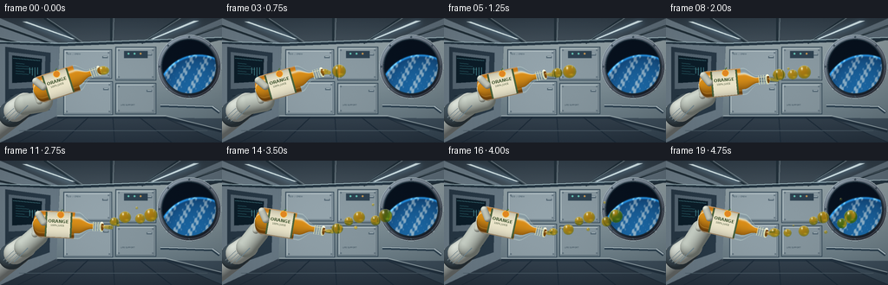
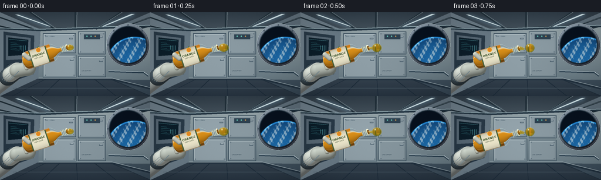

CODING AGENTS AS PIXEL WORLD MODELS
traex/GPT-6.1-Sol · phygen_003
点击播放 · 原生 RGB 像素
逐轮保存的候选
回放视频、检查图与代码变化。
每份候选均可单独播放。实际图片检查记录在下方工具轨迹中。
候选 01播放与检查图
点击播放 · 原生 RGB 像素


展开代码变化
--- 上一保存版本
+++ 本次保存版本
@@ -0,0 +1,313 @@
+"""Text-only, deterministic RGB animation, using analytic geometry and Pillow.
+A tilted open juice bottle in a crew module; fluid moves inertially in microgravity.
+"""
+from pathlib import Path
+import math
+import numpy as np
+from PIL import Image, ImageDraw, ImageFont, ImageFilter
+import artifact_io
+
+ROOT = Path(__file__).resolve().parent
+S = 3
+W, H = 256*S, 144*S
+Y, X = np.mgrid[0:H, 0:W].astype(np.float32) / S
+rng = np.random.default_rng(31)
+FONTP = '/usr/share/fonts/truetype/dejavu/DejaVuSans.ttf'
+BOLDP = '/usr/share/fonts/truetype/dejavu/DejaVuSans-Bold.ttf'
+
+def font(n, bold=False): return ImageFont.truetype(BOLDP if bold else FONTP, max(1, round(n*S)))
+def pts(p): return [(round(x*S),round(y*S)) for x,y in p]
+def line(d,p,fill,width=1): d.line(pts(p),fill=fill,width=max(1,round(width*S)))
+def rect(d,b,fill,outline=None,width=1):
+ d.rectangle(tuple(round(a*S) for a in b), fill=fill, outline=outline, width=max(1,round(width*S)))
+def ellipse(d,b,fill,outline=None,width=1):
+ d.ellipse(tuple(round(a*S) for a in b),fill=fill,outline=outline,width=max(1,round(width*S)))
+def polygon(d,p,fill): d.polygon(pts(p),fill=fill)
+
+def gradient_poly(im, poly, c1, c2, direction='y'):
+ mask = Image.new('L',(W,H)); ImageDraw.Draw(mask).polygon(pts(poly),fill=255)
+ q = Y/144 if direction=='y' else X/256
+ a=np.asarray(c1)[None,None,:]*(1-q[:,:,None])+np.asarray(c2)[None,None,:]*q[:,:,None]
+ im.paste(Image.fromarray(np.uint8(np.clip(a,0,255))), (0,0), mask)
+
+def make_background():
+ q=(Y/144)[...,None]
+ a=np.array([104,120,132])*(1-q)+np.array([54,71,85])*q
+ im=Image.fromarray(np.uint8(a))
+ # Perspective crew module: ribbed ceiling, side equipment wall, lower deck.
+ gradient_poly(im,[(0,0),(256,0),(189,29),(68,29)],(49,62,73),(137,151,157))
+ gradient_poly(im,[(0,0),(68,29),(66,113),(0,144)],(115,132,144),(75,92,104),'x')
+ gradient_poly(im,[(66,113),(189,113),(256,144),(0,144)],(102,117,126),(39,52,65))
+ gradient_poly(im,[(69,30),(256,23),(256,116),(65,114)],(163,177,180),(92,111,122))
+ d=ImageDraw.Draw(im)
+ for x in [-100,-25,51,128,205,281,356]:
+ end=128+(x-128)*.46
+ line(d,[(x,0),(end,29)],(32,47,57),2.3)
+ line(d,[(x+3,0),(end+2,27)],(128,145,151),.6)
+ line(d,[(0,28),(69,31),(256,24)],(36,54,67),3)
+ line(d,[(0,27),(69,29),(256,22)],(192,220,226),1)
+ # Broad LED bars, with faint glow.
+ glow=Image.new('RGB',(W,H),(0,0,0)); gd=ImageDraw.Draw(glow)
+ polygon(gd,[(26,5),(33,5),(86,24),(82,25)],(89,126,147))
+ polygon(gd,[(224,4),(231,4),(176,24),(173,24)],(91,133,159))
+ glow=glow.filter(ImageFilter.GaussianBlur(3*S))
+ im=Image.fromarray(np.uint8(np.clip(np.asarray(im,dtype=float)+np.asarray(glow,dtype=float)*.7,0,255)))
+ d=ImageDraw.Draw(im)
+ polygon(d,[(26,4),(31,4),(86,24),(83,24)],(226,243,245))
+ polygon(d,[(223,3),(229,3),(177,24),(174,24)],(220,239,243))
+ # Utility lockers behind subject, with inset seals and small fasteners.
+ panels=[(74,37,128,69),(74,74,129,111),(134,34,179,71),(134,76,179,110)]
+ for j,(l,t,r,b) in enumerate(panels):
+ rect(d,(l-1,t-1,r+1,b+1),(56,76,90))
+ rect(d,(l,t,r,b),(148-j*5,164-j*5,172-j*5))
+ line(d,[(l+1,b-1),(r-1,b-1),(r-1,t+1)],(88,107,118),.7)
+ line(d,[(l+1,b-2),(l+1,t+1),(r-2,t+1)],(198,211,213),.6)
+ for xx in (l+3,r-3):
+ for yy in (t+3,b-3):
+ ellipse(d,(xx-.7,yy-.7,xx+.7,yy+.7),(63,83,97))
+ line(d,[(xx-.35,yy),(xx+.35,yy)],(189,205,209),.25)
+ rect(d,(r-10,t+7,r-4,t+9),(74,94,108))
+ rect(d,(r-9,t+7.2,r-4.8,t+7.8),(208,220,222))
+ d.text((139*S,99*S),'LIFE SUPPORT',font=font(2.4),fill=(63,82,95))
+ d.text((77*S,40*S),'H2O / CREW',font=font(2.2),fill=(65,88,102))
+ # Left-side inset instrument bay with a small cool screen.
+ polygon(d,[(6,33),(58,40),(57,106),(6,124)],(41,58,72))
+ polygon(d,[(10,39),(52,44),(51,80),(10,82)],(89,106,119))
+ polygon(d,[(14,43),(48,47),(47,73),(14,75)],(12,30,42))
+ line(d,[(15,46),(46,49)],(100,176,184),.6)
+ for i in range(5):
+ line(d,[(18,52+i*3),(28+(i%3)*5,53+i*3)],(64,144,151),.45)
+ for x in range(34,46,3): line(d,[(x,57),(x,68-(x%5))],(83,159,165),.6)
+ for y in (90,94,98,102): line(d,[(12,y),(45,y-4)],(25,41,55),1.1)
+ # Porthole and circular machined rim.
+ cx,cy,r=218,56,31
+ rr=np.sqrt((X-cx)**2+(Y-cy)**2)
+ arr=np.asarray(im).astype(np.float32)
+ rim=(rr<r+6)&(rr>r)
+ ang=np.arctan2(Y-cy,X-cx)
+ val=100+52*np.cos(ang+2.0)+22*np.cos((rr-r)*1.8)
+ metal=np.stack([val*.86,val*.96,val+8],-1)
+ arr[rim]=metal[rim]
+ space=rr<r
+ sp=np.zeros((H,W,3),np.float32); sp[:]=[7,17,30]
+ # Earth through window: large blue curved limb, irregular cloud formations.
+ ex,ey,er=229,90,48
+ erho=np.sqrt((X-ex)**2+(Y-ey)**2)
+ earth=(erho<er)&space
+ zz=np.sqrt(np.clip(1-(erho/er)**2,0,1))
+ earthcol=np.stack([14+15*zz,54+55*zz,99+74*zz],-1)
+ lat=(Y-ey)/er; lon=(X-ex)/er
+ cloud=(np.sin(lon*17+lat*9)+.65*np.sin(lon*39-lat*24)+.42*np.sin(lon*67+lat*41))
+ clouds=np.clip((cloud-.12)*.95,0,1)*(0.65+0.35*zz)
+ earthcol=earthcol*(1-clouds[...,None]*.66)+np.array([210,226,231])*clouds[...,None]*.66
+ atmosphere=np.exp(-((erho-er+1)/1.3)**2)
+ sp[earth]=earthcol[earth]
+ sp+=atmosphere[...,None]*np.array([21,87,123])
+ arr[space]=sp[space]
+ im=Image.fromarray(np.uint8(np.clip(arr,0,255))); d=ImageDraw.Draw(im)
+ ellipse(d,(cx-r-1,cy-r-1,cx+r+1,cy+r+1),None,(24,42,55),1.3)
+ ellipse(d,(cx-r-5.8,cy-r-5.8,cx+r+5.8,cy+r+5.8),None,(187,204,211),.5)
+ for a in np.arange(0,2*np.pi,np.pi/4):
+ px=cx+(r+3.5)*np.cos(a);py=cy+(r+3.5)*np.sin(a)
+ ellipse(d,(px-1,py-1,px+1,py+1),(45,61,74))
+ line(d,[(px-.5,py-.4),(px+.5,py+.4)],(156,177,189),.3)
+ # Safety rail and floor seams.
+ line(d,[(66,115),(191,115),(255,131)],(35,51,65),3)
+ line(d,[(66,113),(191,113),(255,129)],(178,193,197),1)
+ for xx in (20,71,132,198,257):
+ line(d,[(128+(xx-128)*.47,115),(xx,144)],(28,43,57),1)
+ line(d,[(22,130),(239,130)],(82,100,111),.6)
+ # Tiny station status lights and conduit, far from liquid.
+ rect(d,(143,38,170,46),(46,66,81))
+ for j in range(3): ellipse(d,(147+j*7,40,149+j*7,42),(104,203,185) if j!=2 else (204,153,83))
+ line(d,[(185,101),(245,103),(253,109)],(43,64,80),3.6)
+ line(d,[(185,100),(245,102),(253,108)],(187,202,207),1.5)
+ # Mild optical softness, fine fixed sensor texture, and unobtrusive vignette.
+ im=im.filter(ImageFilter.GaussianBlur(.24*S))
+ arr=np.asarray(im).astype(np.float32)
+ noise=rng.normal(0,.5,(H,W,1))
+ vig=1-.115*((X-128)**2/128**2+(Y-72)**2/100**2)
+ return np.clip(arr*vig[...,None]+noise,0,255)
+
+BG=make_background()
+
+def shaded_capsule(arr,a,b,r,color,shine=.3):
+ ax,ay=a; bx,by=b
+ t=np.clip(((X-ax)*(bx-ax)+(Y-ay)*(by-ay))/((bx-ax)**2+(by-ay)**2+1e-8),0,1)
+ dx=X-(ax+t*(bx-ax));dy=Y-(ay+t*(by-ay));rho2=(dx*dx+dy*dy)/r**2
+ mask=rho2<1
+ nz=np.sqrt(np.clip(1-rho2,0,1)); nx=dx/r; ny=dy/r
+ lit=np.clip(-.35*nx-.57*ny+.74*nz,0,1)
+ c=np.array(color)[None,None,:]*(.51+.49*lit[...,None])
+ c+=shine*38*np.clip(-.3*nx-.65*ny+.68*nz,0,1)[...,None]**16
+ arr[mask]=c[mask]
+
+def bottle_pose(t):
+ angle=math.radians(-18+31*(.5-.5*math.cos(math.pi*min(t/4.5,1))))
+ return 73+.9*math.sin(t*.7),74+.5*math.sin(t*.9),angle
+
+def localworld(cx,cy,a,u,v):
+ return cx+u*math.cos(a)-v*math.sin(a),cy+u*math.sin(a)+v*math.cos(a)
+
+def render_hand(arr,cx,cy,a):
+ # Crewmember sleeve, soft glove, and articulated fingers wrapped around bottle.
+ shaded_capsule(arr,(-10,129),(20,106),15,(173,180,177))
+ shaded_capsule(arr,(13,111),(24,102),15,(68,84,94))
+ shaded_capsule(arr,(17,107),(29,99),13,(211,217,208))
+ palm=localworld(cx,cy,a,-30,14)
+ shaded_capsule(arr,(28,100),palm,12,(196,204,194))
+ for u in [-33,-26,-19]:
+ p=localworld(cx,cy,a,u,12); q=localworld(cx,cy,a,u,0)
+ shaded_capsule(arr,p,q,4,(217,222,207),.2)
+ im=Image.fromarray(np.uint8(np.clip(arr,0,255)));d=ImageDraw.Draw(im)
+ for j in range(3): line(d,[(4+j*3,115+j*2),(16+j*3,104+j*2)],(122,138,143),.55)
+ line(d,[(16,117),(32,101)],(110,129,137),1.2)
+ return np.asarray(im).astype(np.float32)
+
+def render_bottle(arr,t):
+ cx,cy,a=bottle_pose(t)
+ arr=render_hand(arr,cx,cy,a)
+ ca,sa=math.cos(a),math.sin(a)
+ u=(X-cx)*ca+(Y-cy)*sa; v=-(X-cx)*sa+(Y-cy)*ca
+ # Smooth body, rounded heel, shoulder taper and uncapped neck.
+ radius=np.where(u<-27,15.6*np.sqrt(np.clip(1-((u+27)/9)**2,0,1)),15.6)
+ zt=np.clip((u-16)/15,0,1)
+ radius=np.where(u>16,15.6-(15.6-5.4)*(zt*zt*(3-2*zt)),radius)
+ inside=(u>-36)&(u<43.4)&(np.abs(v)<radius)
+ vn=v/(radius+1e-4); nz=np.sqrt(np.clip(1-vn*vn,0,1))
+ light=.47+.53*np.clip(-.53*vn+.83*nz,0,1)
+ # Orange liquid fills transparent PET bottle; no conventional flat gravity surface.
+ fill_limit=16-1.5*t
+ liquid=(u<fill_limit) | ((u<34)&(np.abs(v)<radius*.57))
+ base=np.stack([205+17*nz,101+45*nz,13+12*nz],-1)
+ base*=light[...,None]
+ empty=arr*.55+np.stack([105+30*nz,132+24*nz,142+23*nz],-1)*.45
+ c=np.where(liquid[...,None],base,empty)
+ # Wide softbox reflection, bright edge and narrow streaks reveal glossy clear plastic.
+ reflection=np.exp(-((vn+.57)/.10)**2)*.64
+ c=c*(1-reflection[...,None])+np.array([249,246,217])*reflection[...,None]
+ edge=np.clip((np.abs(vn)-.87)/.13,0,1)*.55
+ c=c*(1-edge[...,None])+np.array([213,229,226])*edge[...,None]
+ c+=np.exp(-((vn-.65)/.034)**2)[...,None]*np.array([33,32,22])
+ arr[inside]=c[inside]
+ # Label is wrapped around the body and retains cylindrical illumination.
+ label=inside&(u>-22)&(u<9)&(np.abs(vn)<.93)
+ labcol=np.array([235,229,202])[None,None,:]*(.71+.29*nz[...,None])
+ arr[label]=np.broadcast_to(labcol,arr.shape)[label]
+ stripes=label&((u<-20)|(u>7))
+ arr[stripes]=np.array([77,103,63])*(.7+.3*nz[stripes,None])
+ # Label artwork in local bottle coordinates, composited as a rotated transparent patch.
+ patch=Image.new('RGBA',(85*S,45*S));d=ImageDraw.Draw(patch)
+ d.text((24*S,16*S),'ORANGE',font=font(5,True),fill=(58,78,43,255))
+ d.text((27*S,22*S),'100% JUICE',font=font(2.7),fill=(83,94,68,255))
+ ellipse(d,(34,7,42,15),(224,134,34,255),(243,189,75,255),.5)
+ line(d,[(38,7),(40,5)],(78,111,53,255),1)
+ # Patch center corresponds to local (0,0).
+ patch=patch.rotate(-math.degrees(a),resample=Image.Resampling.BICUBIC,expand=True)
+ im=Image.fromarray(np.uint8(np.clip(arr,0,255))).convert('RGBA')
+ im.alpha_composite(patch,(round(cx*S-patch.width/2),round(cy*S-patch.height/2)))
+ arr=np.asarray(im.convert('RGB')).astype(np.float32)
+ # Neck thread bands, annular lip, and a visible dark open mouth.
+ im=Image.fromarray(np.uint8(np.clip(arr,0,255)));d=ImageDraw.Draw(im)
+ for pos in [33.2,36,38.8,42]:
+ p=localworld(cx,cy,a,pos,-5.2);q=localworld(cx,cy,a,pos,5.2)
+ line(d,[p,q],(222,227,195),.65)
+ p=localworld(cx,cy,a,pos+.8,-5.0);q=localworld(cx,cy,a,pos+.8,5.0)
+ line(d,[p,q],(130,148,126),.4)
+ arr=np.asarray(im).astype(np.float32)
+ lip=((u-43.3)/2.7)**2+(v/5.9)**2<1
+ hole=((u-44.1)/1.65)**2+(v/4.6)**2<1
+ arr[lip]=[210,217,177]
+ arr[hole]=[118,69,14]
+ glare=lip&(v<-3.6)
+ arr[glare]=[250,248,220]
+ # Visible thumb rests across left front edge rather than obstructing the label.
+ p=localworld(cx,cy,a,-30,-11);q=localworld(cx,cy,a,-24,-2)
+ shaded_capsule(arr,p,q,4.1,(219,223,208),.15)
+ return arr
+
+def fluid_geometry(t):
+ cx,cy,a=bottle_pose(t);mx,my=localworld(cx,cy,a,44.5,0)
+ blobs=[]
+ # Detached parcels have constant launch velocity: no gravity-driven falling arcs.
+ births=[-.25,.55,1.30,2.05,2.80,3.55,4.30]
+ sizes=[7.8,5.9,6.9,5.2,6.3,4.7,5.8]
+ for i,(birth,r) in enumerate(zip(births,sizes)):
+ age=t-birth
+ if age<0: continue
+ bx,by,ba=bottle_pose(max(0,birth));ox,oy=localworld(bx,by,ba,44.5,0)
+ growth=min(1, max(.12,age/.48))**.45
+ vx=19.5+1.3*math.sin(i*2)
+ vy=.9+1.8*math.sin(i*1.8)
+ px=ox+vx*age;py=oy+vy*age
+ if age<.35:
+ mix=age/.35;px=mx*(1-mix)+px*mix;py=my*(1-mix)+py*mix
+ # Freshly pinched drops relax from an ellipsoid into a round globule.
+ elong=1+.48*math.exp(-age*2.8)
+ blobs.append((px,py,r*growth*elong,r*growth/np.sqrt(elong),i))
+ # The issuing liquid remains a short rounded filament, not a waterfall.
+ phase=(t-.55)%.75
+ necklen=4.5+5.5*(.5+.5*math.cos(phase/.75*2*np.pi))
+ for k in range(12):
+ f=k/11
+ r=1.55+1.05*f+.35*math.sin(f*np.pi)
+ blobs.append((mx+necklen*f,my+.6*f,r,r,12))
+ # Two tiny satellite drops separated by capillary pinch-off, floating freely.
+ for birth,vel,rad in [(1.1,(22,-5),1.65),(2.2,(24,4.2),2.15),(3.3,(17,-4),1.3)]:
+ age=t-birth
+ if age>=0:
+ bx,by,ba=bottle_pose(birth);ox,oy=localworld(bx,by,ba,49,0)
+ rr=rad*min(1,age/.24)
+ blobs.append((ox+vel[0]*age,oy+vel[1]*age,rr,rr,14))
+ return blobs
+
+def render_fluid(arr,t):
+ # Analytic front surface of a union of fluid ellipsoids; this seamlessly joins
+ # the mouth filament while detached spheres refract the actual station image.
+ zbest=np.full((H,W),-100.,np.float32)
+ nx=np.zeros((H,W),np.float32);ny=nx.copy();nz=nx.copy();depth=nx.copy()
+ for px,py,rx,ry,ident in fluid_geometry(t):
+ if min(rx,ry)<.08: continue
+ qx=(X-px)/rx;qy=(Y-py)/ry;q=qx*qx+qy*qy
+ zz=np.sqrt(np.clip(1-q,0,1)); z=zz*min(rx,ry)
+ mask=(q<1)&(z>zbest)
+ zbest[mask]=z[mask]; nx[mask]=qx[mask];ny[mask]=qy[mask];nz[mask]=zz[mask];depth[mask]=z[mask]
+ mask=zbest>-99
+ # Refraction: background detail bent and compressed through the orange lens.
+ sx=np.clip(((X-nx*depth*.65)*S).astype(int),0,W-1)
+ sy=np.clip(((Y-ny*depth*.65)*S).astype(int),0,H-1)
+ transmitted=arr[sy,sx]
+ optical=depth*2
+ attenuation=np.exp(-optical[...,None]*np.array([.019,.093,.29]))
+ tint=transmitted*attenuation
+ tint+=np.array([238,137,16])[None,None,:]*(1-attenuation)*.68
+ lambert=np.clip(-.38*nx-.6*ny+.68*nz,0,1)
+ tint+=np.array([37,19,2])*lambert[...,None]
+ fresnel=.04+.65*(1-nz)**3
+ env=np.stack([85+145*np.clip(-ny,0,1),111+127*np.clip(-ny,0,1),118+113*np.clip(-ny,0,1)],-1)
+ c=tint*(1-fresnel[...,None])+env*fresnel[...,None]
+ # Reflected ceiling light panels: elongated glossy white top-left highlights.
+ h1=np.exp(-((nx+.34)/.14)**2-((ny+.52)/.22)**2)*.88
+ h2=np.exp(-((nx-.40)/.055)**2-((ny+.66)/.19)**2)*.45
+ c=c*(1-h1[...,None])+np.array([255,250,218])*h1[...,None]
+ c=c*(1-h2[...,None])+np.array([238,249,239])*h2[...,None]
+ # A subtle concentrated amber caustic on the opposite side of each suspended drop.
+ caust=np.exp(-((nx-.28)/.3)**2-((ny-.48)/.16)**2)
+ c+=caust[...,None]*np.array([39,33,5])
+ arr[mask]=c[mask]
+ return arr
+
+def main():
+ frames=[]
+ for i in range(20):
+ t=i/4
+ a=render_bottle(BG.copy(),t)
+ a=render_fluid(a,t)
+ im=Image.fromarray(np.uint8(np.clip(a,0,255)))
+ im=im.resize((256,144),Image.Resampling.LANCZOS)
+ frames.append(np.asarray(im,dtype=np.uint8))
+ frames=np.stack(frames)
+ artifact_io.save(frames,ROOT)
+ print('Saved',frames.shape,frames.dtype,'to',ROOT)
+
+if __name__=='__main__': main()
可观测工具轨迹
实际执行的命令与返回图片。
命令 1exit 0
/bin/bash -lc "ls -la && cat prompt.txt && printf '\\n---RULES---\\n' && cat GENERATION_RULES.md && printf '\\n---SPEC---\\n' && cat task_spec.json"
命令 2exit 0
/bin/bash -lc "cat artifact_io.py && python - <<'PY'
import PIL,numpy
print('PIL', PIL.__version__)
PY"命令 3exit 0
/bin/bash -lc 'fc-list | head -10'
命令 4exit 0
/bin/bash -lc "cat > generate.py <<'PY'
\"\"\"Text-only, deterministic RGB animation, using analytic geometry and Pillow.
A tilted open juice bottle in a crew module; fluid moves inertially in microgravity.
\"\"\"
from pathlib import Path
import math
import numpy as np
from PIL import Image, ImageDraw, ImageFont, ImageFilter
import artifact_io
ROOT = Path(__file__).resolve().parent
S = 3
W, H = 256*S, 144*S
Y, X = np.mgrid[0:H, 0:W].astype(np.float32) / S
rng = np.random.default_rng(31)
FONTP = '/usr/share/fonts/truetype/dejavu/DejaVuSans.ttf'
BOLDP = '/usr/share/fonts/truetype/dejavu/DejaVuSans-Bold.ttf'
def font(n, bold=False): return ImageFont.truetype(BOLDP if bold else FONTP, max(1, round(n*S)))
def pts(p): return [(round(x*S),round(y*S)) for x,y in p]
def line(d,p,fill,width=1): d.line(pts(p),fill=fill,width=max(1,round(width*S)))
def rect(d,b,fill,outline=None,width=1):
d.rectangle(tuple(round(a*S) for a in b), fill=fill, outline=outline, width=max(1,round(width*S)))
def ellipse(d,b,fill,outline=None,width=1):
d.ellipse(tuple(round(a*S) for a in b),fill=fill,outline=outline,width=max(1,round(width*S)))
def polygon(d,p,fill): d.polygon(pts(p),fill=fill)
def gradient_poly(im, poly, c1, c2, direction='y'):
mask = Image.new('L',(W,H)); ImageDraw.Draw(mask).polygon(pts(poly),fill=255)
q = Y/144 if direction=='y' else X/256
a=np.asarray(c1)[None,None,:]*(1-q[:,:,None])+np.asarray(c2)[None,None,:]*q[:,:,None]
im.paste(Image.fromarray(np.uint8(np.clip(a,0,255))), (0,0), mask)
def make_background():
q=(Y/144)[...,None]
a=np.array([104,120,132])*(1-q)+np.array([54,71,85])*q
im=Image.fromarray(np.uint8(a))
# Perspective crew module: ribbed ceiling, side equipment wall, lower deck.
gradient_poly(im,[(0,0),(256,0),(189,29),(68,29)],(49,62,73),(137,151,157))
gradient_poly(im,[(0,0),(68,29),(66,113),(0,144)],(115,132,144),(75,92,104),'x')
gradient_poly(im,[(66,113),(189,113),(256,144),(0,144)],(102,117,126),(39,52,65))
gradient_poly(im,[(69,30),(256,23),(256,116),(65,114)],(163,177,180),(92,111,122))
d=ImageDraw.Draw(im)
for x in [-100,-25,51,128,205,281,356]:
end=128+(x-128)*.46
line(d,[(x,0),(end,29)],(32,47,57),2.3)
line(d,[(x+3,0),(end+2,27)],(128,145,151),.6)
line(d,[(0,28),(69,31),(256,24)],(36,54,67),3)
line(d,[(0,27),(69,29),(256,22)],(192,220,226),1)
# Broad LED bars, with faint glow.
glow=Image.new('RGB',(W,H),(0,0,0)); gd=ImageDraw.Draw(glow)
polygon(gd,[(26,5),(33,5),(86,24),(82,25)],(89,126,147))
polygon(gd,[(224,4),(231,4),(176,24),(173,24)],(91,133,159))
glow=glow.filter(ImageFilter.GaussianBlur(3*S))
im=Image.fromarray(np.uint8(np.clip(np.asarray(im,dtype=float)+np.asarray(glow,dtype=float)*.7,0,255)))
d=ImageDraw.Draw(im)
polygon(d,[(26,4),(31,4),(86,24),(83,24)],(226,243,245))
polygon(d,[(223,3),(229,3),(177,24),(174,24)],(220,239,243))
# Utility lockers behind subject, with inset seals and small fasteners.
panels=[(74,37,128,69),(74,74,129,111),(134,34,179,71),(134,76,179,110)]
for j,(l,t,r,b) in enumerate(panels):
rect(d,(l-1,t-1,r+1,b+1),(56,76,90))
rect(d,(l,t,r,b),(148-j*5,164-j*5,172-j*5))
line(d,[(l+1,b-1),(r-1,b-1),(r-1,t+1)],(88,107,118),.7)
line(d,[(l+1,b-2),(l+1,t+1),(r-2,t+1)],(198,211,213),.6)
for xx in (l+3,r-3):
for yy in (t+3,b-3):
ellipse(d,(xx-.7,yy-.7,xx+.7,yy+.7),(63,83,97))
line(d,[(xx-.35,yy),(xx+.35,yy)],(189,205,209),.25)
rect(d,(r-10,t+7,r-4,t+9),(74,94,108))
rect(d,(r-9,t+7.2,r-4.8,t+7.8),(208,220,222))
d.text((139*S,99*S),'LIFE SUPPORT',font=font(2.4),fill=(63,82,95))
d.text((77*S,40*S),'H2O / CREW',font=font(2.2),fill=(65,88,102))
# Left-side inset instrument bay with a small cool screen.
polygon(d,[(6,33),(58,40),(57,106),(6,124)],(41,58,72))
polygon(d,[(10,39),(52,44),(51,80),(10,82)],(89,106,119))
polygon(d,[(14,43),(48,47),(47,73),(14,75)],(12,30,42))
line(d,[(15,46),(46,49)],(100,176,184),.6)
for i in range(5):
line(d,[(18,52+i*3),(28+(i%3)*5,53+i*3)],(64,144,151),.45)
for x in range(34,46,3): line(d,[(x,57),(x,68-(x%5))],(83,159,165),.6)
for y in (90,94,98,102): line(d,[(12,y),(45,y-4)],(25,41,55),1.1)
# Porthole and circular machined rim.
cx,cy,r=218,56,31
rr=np.sqrt((X-cx)**2+(Y-cy)**2)
arr=np.asarray(im).astype(np.float32)
rim=(rr<r+6)&(rr>r)
ang=np.arctan2(Y-cy,X-cx)
val=100+52*np.cos(ang+2.0)+22*np.cos((rr-r)*1.8)
metal=np.stack([val*.86,val*.96,val+8],-1)
arr[rim]=metal[rim]
space=rr<r
sp=np.zeros((H,W,3),np.float32); sp[:]=[7,17,30]
# Earth through window: large blue curved limb, irregular cloud formations.
ex,ey,er=229,90,48
erho=np.sqrt((X-ex)**2+(Y-ey)**2)
earth=(erho<er)&space
zz=np.sqrt(np.clip(1-(erho/er)**2,0,1))
earthcol=np.stack([14+15*zz,54+55*zz,99+74*zz],-1)
lat=(Y-ey)/er; lon=(X-ex)/er
cloud=(np.sin(lon*17+lat*9)+.65*np.sin(lon*39-lat*24)+.42*np.sin(lon*67+lat*41))
clouds=np.clip((cloud-.12)*.95,0,1)*(0.65+0.35*zz)
earthcol=earthcol*(1-clouds[...,None]*.66)+np.array([210,226,231])*clouds[...,None]*.66
atmosphere=np.exp(-((erho-er+1)/1.3)**2)
sp[earth]=earthcol[earth]
sp+=atmosphere[...,None]*np.array([21,87,123])
arr[space]=sp[space]
im=Image.fromarray(np.uint8(np.clip(arr,0,255))); d=ImageDraw.Draw(im)
ellipse(d,(cx-r-1,cy-r-1,cx+r+1,cy+r+1),None,(24,42,55),1.3)
ellipse(d,(cx-r-5.8,cy-r-5.8,cx+r+5.8,cy+r+5.8),None,(187,204,211),.5)
for a in np.arange(0,2*np.pi,np.pi/4):
px=cx+(r+3.5)*np.cos(a);py=cy+(r+3.5)*np.sin(a)
ellipse(d,(px-1,py-1,px+1,py+1),(45,61,74))
line(d,[(px-.5,py-.4),(px+.5,py+.4)],(156,177,189),.3)
# Safety rail and floor seams.
line(d,[(66,115),(191,115),(255,131)],(35,51,65),3)
line(d,[(66,113),(191,113),(255,129)],(178,193,197),1)
for xx in (20,71,132,198,257):
line(d,[(128+(xx-128)*.47,115),(xx,144)],(28,43,57),1)
line(d,[(22,130),(239,130)],(82,100,111),.6)
# Tiny station status lights and conduit, far from liquid.
rect(d,(143,38,170,46),(46,66,81))
for j in range(3): ellipse(d,(147+j*7,40,149+j*7,42),(104,203,185) if j"'!=2 else (204,153,83))
line(d,[(185,101),(245,103),(253,109)],(43,64,80),3.6)
line(d,[(185,100),(245,102),(253,108)],(187,202,207),1.5)
# Mild optical softness, fine fixed sensor texture, and unobtrusive vignette.
im=im.filter(ImageFilter.GaussianBlur(.24*S))
arr=np.asarray(im).astype(np.float32)
noise=rng.normal(0,.5,(H,W,1))
vig=1-.115*((X-128)**2/128**2+(Y-72)**2/100**2)
return np.clip(arr*vig[...,None]+noise,0,255)
BG=make_background()
def shaded_capsule(arr,a,b,r,color,shine=.3):
ax,ay=a; bx,by=b
t=np.clip(((X-ax)*(bx-ax)+(Y-ay)*(by-ay))/((bx-ax)**2+(by-ay)**2+1e-8),0,1)
dx=X-(ax+t*(bx-ax));dy=Y-(ay+t*(by-ay));rho2=(dx*dx+dy*dy)/r**2
mask=rho2<1
nz=np.sqrt(np.clip(1-rho2,0,1)); nx=dx/r; ny=dy/r
lit=np.clip(-.35*nx-.57*ny+.74*nz,0,1)
c=np.array(color)[None,None,:]*(.51+.49*lit[...,None])
c+=shine*38*np.clip(-.3*nx-.65*ny+.68*nz,0,1)[...,None]**16
arr[mask]=c[mask]
def bottle_pose(t):
angle=math.radians(-18+31*(.5-.5*math.cos(math.pi*min(t/4.5,1))))
return 73+.9*math.sin(t*.7),74+.5*math.sin(t*.9),angle
def localworld(cx,cy,a,u,v):
return cx+u*math.cos(a)-v*math.sin(a),cy+u*math.sin(a)+v*math.cos(a)
def render_hand(arr,cx,cy,a):
# Crewmember sleeve, soft glove, and articulated fingers wrapped around bottle.
shaded_capsule(arr,(-10,129),(20,106),15,(173,180,177))
shaded_capsule(arr,(13,111),(24,102),15,(68,84,94))
shaded_capsule(arr,(17,107),(29,99),13,(211,217,208))
palm=localworld(cx,cy,a,-30,14)
shaded_capsule(arr,(28,100),palm,12,(196,204,194))
for u in [-33,-26,-19]:
p=localworld(cx,cy,a,u,12); q=localworld(cx,cy,a,u,0)
shaded_capsule(arr,p,q,4,(217,222,207),.2)
im=Image.fromarray(np.uint8(np.clip(arr,0,255)));d=ImageDraw.Draw(im)
for j in range(3): line(d,[(4+j*3,115+j*2),(16+j*3,104+j*2)],(122,138,143),.55)
line(d,[(16,117),(32,101)],(110,129,137),1.2)
return np.asarray(im).astype(np.float32)
def render_bottle(arr,t):
cx,cy,a=bottle_pose(t)
arr=render_hand(arr,cx,cy,a)
ca,sa=math.cos(a),math.sin(a)
u=(X-cx)*ca+(Y-cy)*sa; v=-(X-cx)*sa+(Y-cy)*ca
# Smooth body, rounded heel, shoulder taper and uncapped neck.
radius=np.where(u<-27,15.6*np.sqrt(np.clip(1-((u+27)/9)**2,0,1)),15.6)
zt=np.clip((u-16)/15,0,1)
radius=np.where(u>16,15.6-(15.6-5.4)*(zt*zt*(3-2*zt)),radius)
inside=(u>-36)&(u<43.4)&(np.abs(v)<radius)
vn=v/(radius+1e-4); nz=np.sqrt(np.clip(1-vn*vn,0,1))
light=.47+.53*np.clip(-.53*vn+.83*nz,0,1)
# Orange liquid fills transparent PET bottle; no conventional flat gravity surface.
fill_limit=16-1.5*t
liquid=(u<fill_limit) | ((u<34)&(np.abs(v)<radius*.57))
base=np.stack([205+17*nz,101+45*nz,13+12*nz],-1)
base*=light[...,None]
empty=arr*.55+np.stack([105+30*nz,132+24*nz,142+23*nz],-1)*.45
c=np.where(liquid[...,None],base,empty)
# Wide softbox reflection, bright edge and narrow streaks reveal glossy clear plastic.
reflection=np.exp(-((vn+.57)/.10)**2)*.64
c=c*(1-reflection[...,None])+np.array([249,246,217])*reflection[...,None]
edge=np.clip((np.abs(vn)-.87)/.13,0,1)*.55
c=c*(1-edge[...,None])+np.array([213,229,226])*edge[...,None]
c+=np.exp(-((vn-.65)/.034)**2)[...,None]*np.array([33,32,22])
arr[inside]=c[inside]
# Label is wrapped around the body and retains cylindrical illumination.
label=inside&(u>-22)&(u<9)&(np.abs(vn)<.93)
labcol=np.array([235,229,202])[None,None,:]*(.71+.29*nz[...,None])
arr[label]=np.broadcast_to(labcol,arr.shape)[label]
stripes=label&((u<-20)|(u>7))
arr[stripes]=np.array([77,103,63])*(.7+.3*nz[stripes,None])
# Label artwork in local bottle coordinates, composited as a rotated transparent patch.
patch=Image.new('"'RGBA',(85*S,45*S));d=ImageDraw.Draw(patch)
d.text((24*S,16*S),'ORANGE',font=font(5,True),fill=(58,78,43,255))
d.text((27*S,22*S),'100% JUICE',font=font(2.7),fill=(83,94,68,255))
ellipse(d,(34,7,42,15),(224,134,34,255),(243,189,75,255),.5)
line(d,[(38,7),(40,5)],(78,111,53,255),1)
# Patch center corresponds to local (0,0).
patch=patch.rotate(-math.degrees(a),resample=Image.Resampling.BICUBIC,expand=True)
im=Image.fromarray(np.uint8(np.clip(arr,0,255))).convert('RGBA')
im.alpha_composite(patch,(round(cx*S-patch.width/2),round(cy*S-patch.height/2)))
arr=np.asarray(im.convert('RGB')).astype(np.float32)
# Neck thread bands, annular lip, and a visible dark open mouth.
im=Image.fromarray(np.uint8(np.clip(arr,0,255)));d=ImageDraw.Draw(im)
for pos in [33.2,36,38.8,42]:
p=localworld(cx,cy,a,pos,-5.2);q=localworld(cx,cy,a,pos,5.2)
line(d,[p,q],(222,227,195),.65)
p=localworld(cx,cy,a,pos+.8,-5.0);q=localworld(cx,cy,a,pos+.8,5.0)
line(d,[p,q],(130,148,126),.4)
arr=np.asarray(im).astype(np.float32)
lip=((u-43.3)/2.7)**2+(v/5.9)**2<1
hole=((u-44.1)/1.65)**2+(v/4.6)**2<1
arr[lip]=[210,217,177]
arr[hole]=[118,69,14]
glare=lip&(v<-3.6)
arr[glare]=[250,248,220]
# Visible thumb rests across left front edge rather than obstructing the label.
p=localworld(cx,cy,a,-30,-11);q=localworld(cx,cy,a,-24,-2)
shaded_capsule(arr,p,q,4.1,(219,223,208),.15)
return arr
def fluid_geometry(t):
cx,cy,a=bottle_pose(t);mx,my=localworld(cx,cy,a,44.5,0)
blobs=[]
# Detached parcels have constant launch velocity: no gravity-driven falling arcs.
births=[-.25,.55,1.30,2.05,2.80,3.55,4.30]
sizes=[7.8,5.9,6.9,5.2,6.3,4.7,5.8]
for i,(birth,r) in enumerate(zip(births,sizes)):
age=t-birth
if age<0: continue
bx,by,ba=bottle_pose(max(0,birth));ox,oy=localworld(bx,by,ba,44.5,0)
growth=min(1, max(.12,age/.48))**.45
vx=19.5+1.3*math.sin(i*2)
vy=.9+1.8*math.sin(i*1.8)
px=ox+vx*age;py=oy+vy*age
if age<.35:
mix=age/.35;px=mx*(1-mix)+px*mix;py=my*(1-mix)+py*mix
# Freshly pinched drops relax from an ellipsoid into a round globule.
elong=1+.48*math.exp(-age*2.8)
blobs.append((px,py,r*growth*elong,r*growth/np.sqrt(elong),i))
# The issuing liquid remains a short rounded filament, not a waterfall.
phase=(t-.55)%.75
necklen=4.5+5.5*(.5+.5*math.cos(phase/.75*2*np.pi))
for k in range(12):
f=k/11
r=1.55+1.05*f+.35*math.sin(f*np.pi)
blobs.append((mx+necklen*f,my+.6*f,r,r,12))
# Two tiny satellite drops separated by capillary pinch-off, floating freely.
for birth,vel,rad in [(1.1,(22,-5),1.65),(2.2,(24,4.2),2.15),(3.3,(17,-4),1.3)]:
age=t-birth
if age>=0:
bx,by,ba=bottle_pose(birth);ox,oy=localworld(bx,by,ba,49,0)
rr=rad*min(1,age/.24)
blobs.append((ox+vel[0]*age,oy+vel[1]*age,rr,rr,14))
return blobs
def render_fluid(arr,t):
# Analytic front surface of a union of fluid ellipsoids; this seamlessly joins
# the mouth filament while detached spheres refract the actual station image.
zbest=np.full((H,W),-100.,np.float32)
nx=np.zeros((H,W),np.float32);ny=nx.copy();nz=nx.copy();depth=nx.copy()
for px,py,rx,ry,ident in fluid_geometry(t):
if min(rx,ry)<.08: continue
qx=(X-px)/rx;qy=(Y-py)/ry;q=qx*qx+qy*qy
zz=np.sqrt(np.clip(1-q,0,1)); z=zz*min(rx,ry)
mask=(q<1)&(z>zbest)
zbest[mask]=z[mask]; nx[mask]=qx[mask];ny[mask]=qy[mask];nz[mask]=zz[mask];depth[mask]=z[mask]
mask=zbest>-99
# Refraction: background detail bent and compressed through the orange lens.
sx=np.clip(((X-nx*depth*.65)*S).astype(int),0,W-1)
sy=np.clip(((Y-ny*depth*.65)*S).astype(int),0,H-1)
transmitted=arr[sy,sx]
optical=depth*2
attenuation=np.exp(-optical[...,None]*np.array([.019,.093,.29]))
tint=transmitted*attenuation
tint+=np.array([238,137,16])[None,None,:]*(1-attenuation)*.68
lambert=np.clip(-.38*nx-.6*ny+.68*nz,0,1)
tint+=np.array([37,19,2])*lambert[...,None]
fresnel=.04+.65*(1-nz)**3
env=np.stack([85+145*np.clip(-ny,0,1),111+127*np.clip(-ny,0,1),118+113*np.clip(-ny,0,1)],-1)
c=tint*(1-fresnel[...,None])+env*fresnel[...,None]
# Reflected ceiling light panels: elongated glossy white top-left highlights.
h1=np.exp(-((nx+.34)/.14)**2-((ny+.52)/.22)**2)*.88
h2=np.exp(-((nx-.40)/.055)**2-((ny+.66)/.19)**2)*.45
c=c*(1-h1[...,None])+np.array([255,250,218])*h1[...,None]
c=c*(1-h2[...,None])+np.array([238,249,239])*h2[...,None]
# A subtle concentrated amber caustic on the opposite side of each suspended drop.
caust=np.exp(-((nx-.28)/.3)**2-((ny-.48)/.16)**2)
c+=caust[...,None]*np.array([39,33,5])
arr[mask]=c[mask]
return arr
def main():
frames=[]
for i in range(20):
t=i/4
a=render_bottle(BG.copy(),t)
a=render_fluid(a,t)
im=Image.fromarray(np.uint8(np.clip(a,0,255)))
im=im.resize((256,144),Image.Resampling.LANCZOS)
frames.append(np.asarray(im,dtype=np.uint8))
frames=np.stack(frames)
artifact_io.save(frames,ROOT)
print('Saved',frames.shape,frames.dtype,'to',ROOT)
if __name__=='__main__': main()
PY
python generate.py"命令 5exit 0
/bin/bash -lc "python - <<'PY'
from pathlib import Path
import numpy as np
from PIL import Image
p=np.load('pixels.npz')['pixels']
assert p.shape==(144,256,20)
files=sorted(Path('frames').glob('*.png'))
assert len(files)==20
for f in files:
im=Image.open(f)
assert im.mode=='RGB' and im.size==(256,144)
print('Validated all 20 RGB frames and required playback artifacts.')
print('Frame-to-frame average RGB change:',np.abs(np.asarray(Image.open(files[0]),float)-np.asarray(Image.open(files[-1]),float)).mean())
PY
command -v ffmpeg || true
ls -lh pixels.npz index.html inspection.png generate.py"保存候选 1 份；完成命令 5 次；可验证图片返回 0 张。原始 API 响应与完整日志保留在本地。